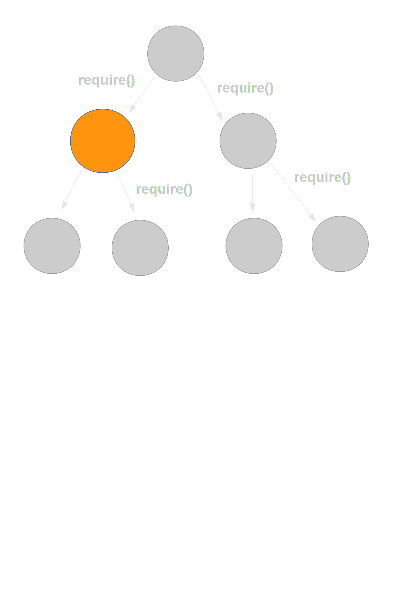
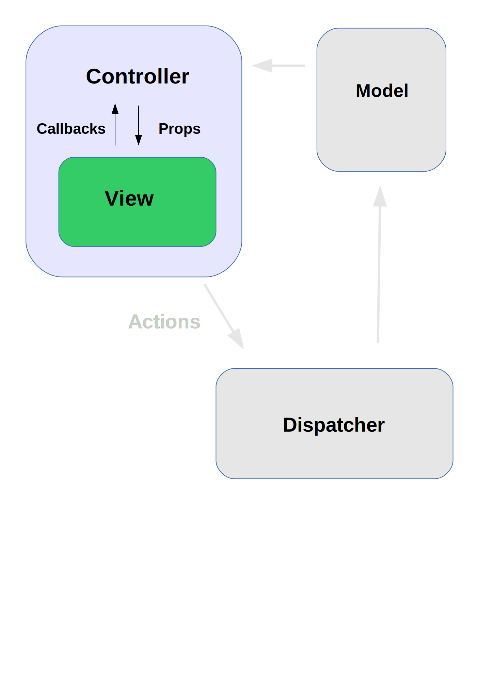

class: center, middle # React Testing Tools & Tricks ??? Something many of us have experienced across web and native apps is that writing tests is straightforward for the business logic but starts to get painful when it comes to the UI. I wanted to understand how React's concepts around components, data-flow and the virtual UI tree applied to testing React apps. This is an overview of what I've learned and the resources I've found useful. --- # UI Testing ??? Today I'm mostly going to talk about unit tests, but there is quite a lot that is reusable for integration tests as well. But firstly, why is it that testing the UI is more difficult than testing other parts of the system? --- class: center <img src="images/heavy-machinery.jpg" width="640"> ### Heavy Machinery Required ??? The first problem is that they usually require heavy machinery to run. For the rest of my tests, I can simply run them at the command line, they execute quickly and if something fails debugging is usually straightforwards. UI tests on the other hand usually involve firing up a suitable environment, such as the browser and talking to it via a suitable protocol and this can introduce... --- class: center ## Fragile Tests <img src="images/house-of-cards.jpg" width="320"> ??? Flakiness. --- ## Timing Issues ??? ... and things that fail due to subtle races and timing issues. --- class: middle # UI Testing with React ??? First I'm going to go briefly over the basic of testing a React app and how to get a component test running in both Node and the browser. Then I'm going to look at following React principles to make writing and debugging UI tests easier, including a look at some of the new features in the recent v0.13 release, hacking Node's module loading for fun and profit and some patterns for structuring components for testability. As an example, I'm going to use a very poor man's Twitter client app. It displays a list of a user's recent tweets and lets them refresh the view. --- # React TestUtils ```js React.addons.TestUtils.renderIntoDocument(component) .scryRenderedDOMComponentsWithClass(component) .findRenderedDOMComponentWithTag() ``` ```js React.addons.TestUtils.Simulate.click(component, event) .mouseDown(component, event) ``` ??? The starting point for writing a UI test in React is a utility library called TestUtils. It lets us render a component into a detached DOM element, get access to the component's DOM nodes and simulate events on them. --- class: middle ```js describe('TweetItem', () => { it('should display item details', () => { const tweet = { user: { screenName: 'reactjs', ... }, text: 'Announcing React v0.13', ... }; * const item = React.addons.TestUtils.renderIntoDocument( <TweetItem tweet={tweet}/> ); * const userScreenName = React.findDOMNode(item.refs.userScreenName); * expect(userScreenName.textContent).to.equal('@' + tweet.user.screenName); const text = React.findDOMNode(item.refs.text); expect(text.textContent).to.equal(tweet.text); }); }); ``` ??? Here we have a component called `TweetItem` which renders an individual entry in the list. To test it, we render it with fake data, get a reference to the DOM node and check that it has the expected content. To run this, we need a test runner that fires up a browser, connects to it via some protocol and drives it, right? --- # jsdom * Fake DOM environment that runs in Node * Good Enough™ for a lot of testing ```js // setup.js - setup the fake DOM jsdom.env({ html: '<body><div id="app"></div></body>', done: (errors, window) => { * global.document = window.document; * global.window = window; * global.navigator = window.navigator; } }); ``` ```js // run our tests mocha --require setup.js <test files> ``` ??? Fortunately, no. Most React components don't actually need a full fidelity environment to work in though. jsdom provides an implementation of the DOM that is good enough for testing most components. [Code Walkthrough] An important point is that When React loads, it inspects its execution environment and checks whether the DOM is available. This means that we need to set up jsdom _before_ requiring React. We do this here using mocha's --require argument. [Demo running command-line tests] Facebook's Jest testing tool ships with jsdom and does this for you, but it is quite easy to integrate with other frameworks. jsdom is great, but the DOM is big and complex so its useful to be able to run tests in the browser as well. For running the tests in the browser, you can take the same code and use your favorite module bundler such as Webpack or Browserify. The only difference is that you don't load the fake DOM environment. [Demo - Mocha tests in the browser] So that's the basics we need for running a UI test on the command line and in the browser. Using jsdom cuts out much of the complexity in the environment, but what about our application itself. --- # Isolation <img class="center-block" src="images/isolation-component-tree.svg" width="640"> ??? Testing the DOM output is fine for the leaves at the bottom, but as we go higher up the tree, that becomes brittle. In the example app, I have a list of tweets. One way to check if the list is working properly is to count the number of DOM nodes that have whatever class I use on the container of an individual tweet. If I make changes to the TweetItem component however, that could cause all the higher-level tests to fail. The higher up the tree we go, the more that could change under it and cause it to fail. --- # Think in Components & Data Flow <img class="center-block" src="images/lego-components.jpg" width="640"> ??? So what's a better way to think about this? A React application is essentially a big tree of components. We'd ideally like to deal with a piece at a time. What about data flow? What's a more 'pure' way to think about this? --- # Isolation <img class="center-block" src="images/component-inputs-outputs.svg" width="800"> ??? If we zoom in on an individual component, we can think of it as a little state machine that takes a stream of props and events as inputs, and produces a stream of child component trees and callbacks as outputs. At this point, it starts to look more like a nice pure function which is easy to test. What we want to do is cut out the rest of the picture and test each little machine in isolation. There are several tools that can help with this. [Reference to David Nolan, Dave McCabe talks on thinking of React components as stream processors and property testing] --- # Component Matching ```js React.addons.TestUtils.scryRenderedComponentsWithType(component, type) .isCompositeComponentWithType(component, type) .findAllInRenderedTree(component, testFunction) ``` ```js it('should display tweets', () => { const list = TestUtils.renderIntoDocument( <TweetList tweets={TEST_TWEETS}/> ); const items = TestUtils.scryRenderedComponentsWithType(list, TweetItem); expect(items.length).to.equal(TEST_TWEETS.length); }); ``` ??? The first tool we have is a set of functions in TestUtils that test the type of a component that comes out of one of these little state machines, rather than what the DOM looks like at the end of the pipe. This means that we can check that our tweet list renders the right number of TweetItem children and be isolated if a TweetItem changes. This is better, but it still means that when testing the TweetList component, we'd execute all the render() functions for lower levels in the tree. --- # Shallow Rendering <img class="center-block" src="images/shallow-rendering.svg" width="450"> ??? React v0.13 has a new feature which helps with this. Its called shallow rendering. React has two main outputs - render a tree of components to a string, render a tree of components to a DOM, render to null. This gives us something like a third option. What it does is render only one level of the tree. In this case, I create a shallow renderer and ask it to render my TweetList. The render() function of my TweetList will be called and it will return a tree of elements. Usually what React would then do next is take each child element in the tree, create a corresponding component for it, and call the render() method on that and so on down the tree. What shallow rendering does is create a dummy component for each of the child elements, which doesn't actually get mounted or rendered. --- class: middle ```js *const shallowRenderer = React.addons.TestUtils.createRenderer(); const renderList = () => { shallowRenderer.render(<TweetList tweets={TEST_TWEETS}/>); * const list = shallowRenderer.getRenderOutput(); return list.props.children.filter(component => component.type == TweetItem); } let items = renderList(); expect(items.length).to.equal(TEST_TWEETS.length); expect(items[0].props.isSelected).to.equal(false); items[0].props.onClick(); items = renderList(); expect(items[0].props.isSelected).to.equal(true); ``` ??? This allows us to render just one level in the tree, and check what children were rendered and what data was passed down to them, so we can check one piece of the component pipeline. In theory, this should allow us to test a lot of components without a DOM at all. In practice it is still an early feature and there are limitations. You can't access 'refs' of children and you can't simulate events on them. --- class: center, middle # Mocking ??? Shallow rendering helps with isolating the rendering part, but we still have all the other logic that touches components, like stores to fetch data from, actions that get dispatched when you interact with the UI etc. Angular has a dependency injection framework for this, what about React? --- <img class="center-block" src="images/jest-logo.png"> * Built-in fake DOM * Automatic parallelization * Fast-forward time ??? Facebook provides a unit testing tool geared towards React, Jest, which has a solution for this. Jest has a bunch of useful features that are good for React. It sets up jsdom for us, it automatically parallelizes tests and also has utilities to fast-forward time in tests and test asynchronous code without having to set up timer callbacks. The most interesting feature though is how it isolates components, stores etc. automatically. --- class: middle # Automatic mocking of `require()`  ??? Jest observes that in a Node/CommonJS app, all your dependencies enter a module in the same way, via require(). If we take over require(), we can mock out components, stores, actions, external data sources, the file system etc. in the same way. Wherever you have a require(), Jest will cut out that piece of functionality and replace it with a mock which has the same structure, but all functions are mocks which capture information about the way they are called and return undefined. --- # Caveats ```js undefined is probably not a function ``` * Automatic mocking * Does not currently run in the browser * Differences between jsdom and (insert browser here)'s DOM * Browser dev tools ??? So how does this work out in practice? On the upside, it is very thorough - you're unlikely to accidentally use a real module in your tests. On the other hand, all of the functions created by the mocked modules return undefined by default, basically violating the return type contract of the function. In JavaScript, that 'undefined' value can propagate a long way through the system before it eventually turns into an error. I found that taking an existing codebase and making it work with Jest can be tricky because of this. There are some other caveats, it doesn't currently run in the browser for example and is currently tied to older versions of iojs and jsdom. The idea of hooking into require() is very useful though, so I looked at other ways of doing that, preferably one which works both in the browser and can also be used selectively in integration tests. --- class: center, middle .center.large-code[`require('module');`] ??? So what goes on when we require() a module? Node.js' module loading system which implements require() is surprisingly simple. A few hundred lines of code which loads your source, wraps it in a function and passes a module object to it. What gets passed to V8 looks a lot like the JS that browserify or Webpack generate for a bundle. A little known fact is that you can 'require()' the module which implements 'require()', it's called 'module', and monkey patch it or inspect internals. Not part of the public documentation, but there are mocking tools such as mockery or rewire that uses it. --- # Mocking `require()` with rewire ```js import rewire from 'rewire'; var TweetList = rewire('../src/TweetList'); class StubTweetItem extends React.Component { render() { return <div>stub tweet</div>; } } TweetList.__set__('TweetItem', StubTweetItem); ``` * Can be used in _Node_ and the browser via _rewire-webpack_ ??? There are several libraries that can be used to mock out require()'d modules. I'm using rewire(). It works by replacing the call to require() for the module you want to test with one to rewire(). That requires the real module and then returns one with methods that let you inspect and replace private variables, such as the modules it requires. This requires more work than Jest, but it gives you more control. rewire() also has the advantage that it works with Webpack. So you can write a set of tests that run in Node, and then bundle up the same set of tests and run them in a real browser. You can also vary the level of stubbing depending on the kind of test you want to write. --- ## What the Flux? ??? That covers isolating individual components. But what about more complex components, ones that fetch data, send actions to Flux stores etc? Something that I've found helpful was a pattern mentioned at a React.conf talk in January which makes testing these easier. --- ## Visual and Container Components <img class="center-block" src="images/container-components.svg" width="500"> ??? That is to separate out complex components into one which is purely visual - it takes data as input, displays it and responds to user inputs by invoking callbacks passed to it and a container which is responsible for fetching data from stores and dispatching actions. This is helpful for reusability because the visual component isn't connected to how its data is fetched, but also useful for testing. When testing the container, you can mock out the data source and check that when data updates occur it updates its state and renders the right type and number of children with the expected props. When the action callbacks passed to the children are invoked, you can check that the correct action is dispatched. When testing the visual component, you can check that given the right input props, it renders the right DOM structure and given the right inputs, it triggers the right callbacks on its props. --- ## Didn't I see this somewhere before...  ??? This does start to look somewhat like the controller in a traditional MVC framework, the difference though is that the data flow is better defined and the controller doesn't write to the model directly. If you're using this with Flux, then most of the early implementations used mixins to fetch data into your component. Newer ones like Flummox provide these wrapper containers for you, so you don't have to write them yourself. --- ### github.com/robertknight/react-testing Robert Knight @robknight_ ??? I hope this has been useful. I have code for a basic setup showing how to get a test running in Node and the browser on Github, plus links to a number of great tutorials and videos.